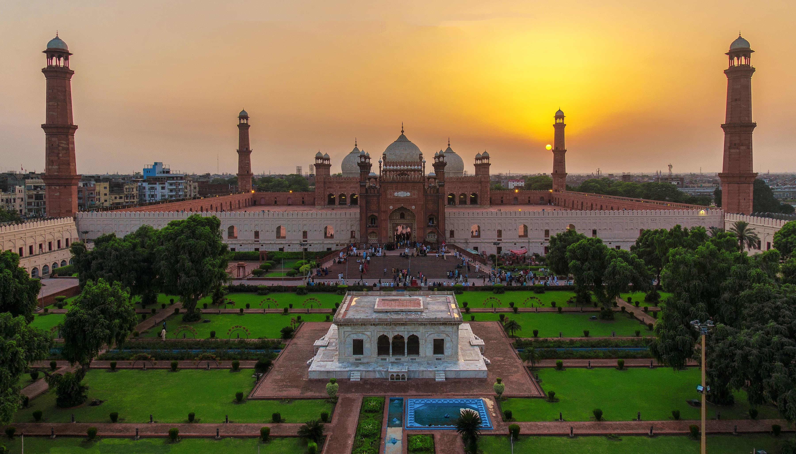

My Favorite Cities
Islamabad

Islamabad is the capital city of Pakistan. It is the country's ninth-most populous city, with a population of over 1.2 million people, and is federally administered by the Pakistani government as part of the Islamabad Capital Territory. Built as a planned city in the 1960s, it replaced Rawalpindi as Pakistan's national capital.
Lahore
Lahore is the second largest city in Pakistan after Karachi and 26th largest in the world, with a population of over 13 million. It is situated in the north-east of the country with River Ravi flowing north-west of the city. It is the capital of the province of Punjab, where it is the largest city.
Muzaffargarh
Muzaffargarh is a city in the province of Punjab, Pakistan. Located on the bank of the Chenab River, it is the capital of the district with the same name. It is the 39th largest city of Pakistan by population.